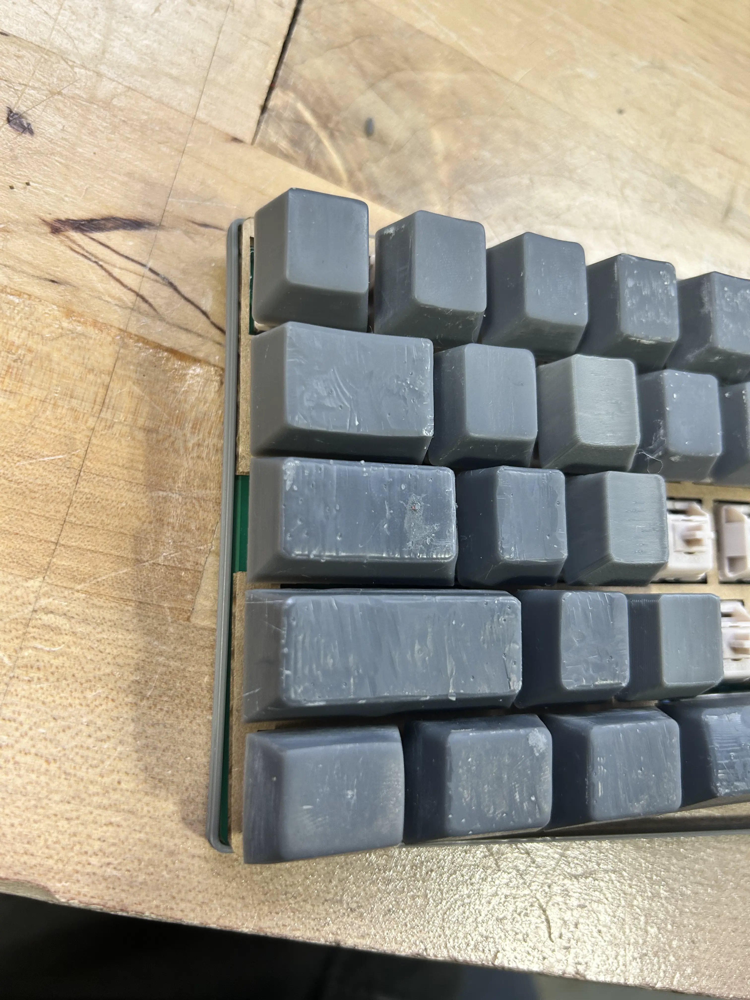
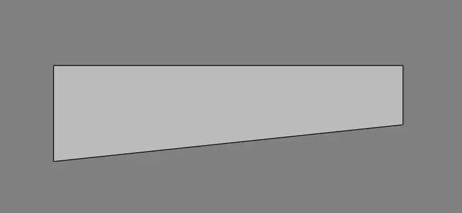
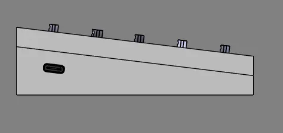
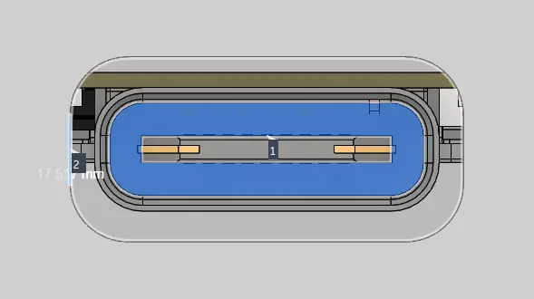

junior week mar. 5, 2026
keyboard updates
saw a "friction fit pad" for the wooting 60he v2, so i decided to create something like this as well
this worked well with my screwless design, and my previous design wasn't my favorite
drafted a rough idea and printed it out of pla to test. worked out pretty well

the thin grey strip on the side
was a bit thin, so i extended it to be about 5mm thick
generally, this is made out of silicone. since i don't think we can machine / cut it properly, i'll probably just print it out of tpu which should have a similar effect
because of the friction fit pad and some other problems with the old case, i decided to just start from scratch
i adjusted the pcb plate and did some research on potential materials for it before landing on polycarbonate
chose it because it's machineable (idk if we have the right drills and stuff, if not i'll choose something different) and has a "thick" sound profile which is what i want.
after that, i decided to download the wooting 60he v2 case, as wooting puts all of their cases online as a 3d model, so i can see what they did.
the biggest difference was that they slanted it downwards instead of upwards, leading to slightly less material being used and the correct typing angle.

wooting 60 he v2 slant
compared to mine, it led to a "incorrect" typing angle and also led to my pcb being slanted to fit in the case. with this new angle, it fixed all of these "issues" (along with fixing the slant in the usb hole)

my old slanting mechanism
the rest of the keyboard case was pretty much the same, but there was a problem with the usb hole again.
the distance between the case and the usb on the kb2040 is 17.5mm, way bigger than the ~2.5mm head for the usb cable.

while i could just increase the size of the hole in the case, it looks weird and i don't want to do that.
thinking of using a male -> female usb c header and mounting it on the case somehow. i don't see any other way to do this while keeping the "universal" aspect of being able to use any usbc cable.